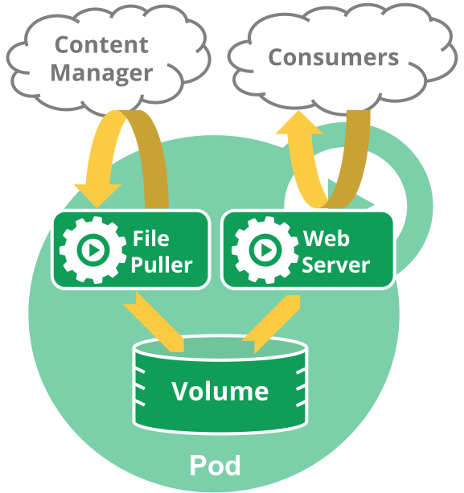

Pods are the smallest deployable units of computing that you can create and manage in Kubernetes.
A Pod (as in a pod of whales or pea pod) is a group of one or more containers, with shared storage and network resources, and a specification for how to run the containers. A Pod's contents are always co-located and co-scheduled, and run in a shared context. A Pod models an application-specific "logical host": it contains one or more application containers which are relatively tightly coupled. In non-cloud contexts, applications executed on the same physical or virtual machine are analogous to cloud applications executed on the same logical host.
As well as application containers, a Pod can contain init containers that run during Pod startup. You can also inject ephemeral containers for debugging a running Pod.
What is a Pod?
Note:
You need to install a container runtime into each node in the cluster so that Pods can run there.
The shared context of a Pod is a set of Linux namespaces, cgroups, and potentially other facets of isolation - the same things that isolate a container. Within a Pod's context, the individual applications may have further sub-isolations applied.
A Pod is similar to a set of containers with shared namespaces and shared filesystem volumes.
Pods in a Kubernetes cluster are used in two main ways:
Pods that run a single container. The "one-container-per-Pod" model is the most common Kubernetes use case; in this case, you can think of a Pod as a wrapper around a single container; Kubernetes manages Pods rather than managing the containers directly.
Pods that run multiple containers that need to work together. A Pod can encapsulate an application composed of multiple co-located containers that are tightly coupled and need to share resources. These co-located containers form a single cohesive unit.
Grouping multiple co-located and co-managed containers in a single Pod is a relatively advanced use case. You should use this pattern only in specific instances in which your containers are tightly coupled.
You don't need to run multiple containers to provide replication (for resilience or capacity); if you need multiple replicas, see Workload management.
Using Pods
The following is an example of a Pod which consists of a container
running the image nginx:1.14.2.
pods/simple-pod.yaml
apiVersion: v1
kind: Pod
metadata:
name: nginx
spec:
containers:
- name: nginx
image: nginx:1.14.2
ports:
- containerPort: 80To create the Pod shown above, run the following command:
kubectl apply -f https://k8s.io/examples/pods/simple-pod.yamlPods are generally not created directly and are created using workload resources. See Working with Pods for more information on how Pods are used with workload resources.
Workload resources for managing pods
Usually you don't need to create Pods directly, even singleton Pods. Instead, create them using workload resources such as Deployment or Job. If your Pods need to track state, consider the StatefulSet resource.
Each Pod is meant to run a single instance of a given application. If you want to scale your application horizontally (to provide more overall resources by running more instances), you should use multiple Pods, one for each instance. In Kubernetes, this is typically referred to as replication. Replicated Pods are usually created and managed as a group by a workload resource and its controller.
See Pods and controllers for more information on how Kubernetes uses workload resources, and their controllers, to implement application scaling and auto-healing.
Pods natively provide two kinds of shared resources for their constituent containers: networking and storage.
Working with Pods
You'll rarely create individual Pods directly in Kubernetes—even singleton Pods. This is because Pods are designed as relatively ephemeral, disposable entities. When a Pod gets created (directly by you, or indirectly by a controller), the new Pod is scheduled to run on a Node in your cluster. The Pod remains on that node until the Pod finishes execution, the Pod object is deleted, the Pod is evicted for lack of resources, or the node fails.
Note:
Restarting a container in a Pod should not be confused with restarting a Pod. A Pod is not a process, but an environment for running container(s). A Pod persists until it is deleted.
The name of a Pod must be a valid DNS subdomain value, but this can produce unexpected results for the Pod hostname. For best compatibility, the name should follow the more restrictive rules for a DNS label.
Pod OS
Feature state:
Stable since Kubernetes v1.25
You should set the .spec.os.name field to either
windows or linux to indicate the operating
system that the containers in that Pod require. These two are the only
operating systems supported for now by Kubernetes. In the future, this
list may be expanded.
The kubelet refuses to run a Pod if the value of
.spec.os.name does not match the operating system of the
node. However, in Kubernetes v1.37, the value of
.spec.os.name does not affect how the kube-scheduler
picks a node for the Pod to run on. In any cluster where there is more
than one operating system for running nodes, you should set the kubernetes.io/os
label correctly on each node, and define pods with a
nodeSelector based on the operating system label. The
kube-scheduler assigns your pod to a node based on other criteria and
may or may not succeed in picking a suitable node placement where the
node OS is right for the containers in that Pod. The Pod security
standards also use this field to avoid enforcing policies that
aren't relevant to the operating system.
Pods and controllers
You can use workload resources to create and manage multiple Pods for you. A controller for the resource handles replication and rollout and automatic healing in case of Pod failure. For example, if a Node fails, a controller notices that Pods on that Node have stopped working and creates a replacement Pod. The scheduler places the replacement Pod onto a healthy Node.
Here are some examples of workload resources that manage one or more Pods:
Specifying a scheduling group
Feature state:
Beta since Kubernetes v1.37; disabled by default
(GenericWorkload)
By default, Kubernetes schedules every Pod individually. However, some tightly-coupled applications need a group of Pods to be scheduled simultaneously to function correctly.
You can link a Pod to a PodGroup using the scheduling
group field (spec.schedulingGroup). This tells the
kube-scheduler that the Pod belongs to a
specific group, enabling it to apply group-level coordinated placement
decisions for the entire group at once.
Pod templates
Controllers for workload resources create Pods from a pod template and manage those Pods on your behalf.
PodTemplates are specifications for creating Pods, and are included in workload resources such as Deployments, Jobs, and DaemonSets.
Each controller for a workload resource uses the
PodTemplate inside the workload object to make actual Pods.
The PodTemplate is part of the desired state of whatever
workload resource you used to run your app.
When you create a Pod, you can include environment variables in the Pod template for the containers that run in the Pod.
The sample below is a manifest for a simple Job with a
template that starts one container. The container in that
Pod prints a message then pauses.
apiVersion: batch/v1
kind: Job
metadata:
name: hello
spec:
template:
# This is the pod template
spec:
containers:
- name: hello
image: busybox:1.28
command: ['sh', '-c', 'echo "Hello, Kubernetes!" && sleep 3600']
restartPolicy: OnFailure
# The pod template ends hereModifying the pod template or switching to a new pod template has no direct effect on the Pods that already exist. If you change the pod template for a workload resource, that resource needs to create replacement Pods that use the updated template.
For example, the StatefulSet controller ensures that the running Pods match the current pod template for each StatefulSet object. If you edit the StatefulSet to change its pod template, the StatefulSet starts to create new Pods based on the updated template. Eventually, all of the old Pods are replaced with new Pods, and the update is complete.
Each workload resource implements its own rules for handling changes to the Pod template. If you want to read more about StatefulSet specifically, read Update strategy in the StatefulSet Basics tutorial.
On Nodes, the kubelet does not directly observe or manage any of the details around pod templates and updates; those details are abstracted away. That abstraction and separation of concerns simplifies system semantics, and makes it feasible to extend the cluster's behavior without changing existing code.
Pod update and replacement
As mentioned in the previous section, when the Pod template for a workload resource is changed, the controller creates new Pods based on the updated template instead of updating or patching the existing Pods.
Kubernetes doesn't prevent you from managing Pods directly. It is
possible to update some fields of a running Pod, in place. However, Pod
update operations like patch,
and replace
have some limitations:
Most of the metadata about a Pod is immutable. For example, you cannot change the
namespace,name,uid, orcreationTimestampfields.If the
metadata.deletionTimestampis set, no new entry can be added to themetadata.finalizerslist.Pod updates may not change fields other than
spec.containers[*].image,spec.initContainers[*].image,spec.activeDeadlineSeconds,spec.terminationGracePeriodSeconds,spec.tolerationsorspec.schedulingGates. Forspec.tolerations, you can only add new entries.When updating the
spec.activeDeadlineSecondsfield, two types of updates are allowed:- setting the unassigned field to a positive number;
- updating the field from a positive number to a smaller, non-negative number.
Pod subresources
The above update rules apply to regular pod updates, but other pod fields can be updated through subresources.
- Resize: The
resizesubresource allows container resources (spec.containers[*].resources) to be updated. See Resize Container Resources for more details. - Ephemeral Containers: The
ephemeralContainerssubresource allows ephemeral containers to be added to a Pod. See Ephemeral Containers for more details. - Status: The
statussubresource allows the pod status to be updated. This is typically only used by the Kubelet and other system controllers. - Binding: The
bindingsubresource allows setting the pod'sspec.nodeNamevia aBindingrequest. This is typically only used by the scheduler.
Pod generation
- The
metadata.generationfield is unique. It will be automatically set by the system such that new pods have ametadata.generationof 1, and every update to mutable fields in the pod's spec will increment themetadata.generationby 1.
Feature state:
Stable since Kubernetes v1.35; enabled by default
(PodObservedGenerationTracking)
observedGenerationis a field that is captured in thestatussection of the Pod object. The Kubelet will setstatus.observedGenerationto track the pod state to the current pod status. The pod'sstatus.observedGenerationwill reflect themetadata.generationof the pod at the point that the pod status is being reported.
Note:
The status.observedGeneration field is managed by the
kubelet and external controllers should not modify this
field.
Different status fields may either be associated with the
metadata.generation of the current sync loop, or with the
metadata.generation of the previous sync loop. The key
distinction is whether a change in the spec is reflected
directly in the status or is an indirect result of a
running process.
Direct Status Updates
For status fields where the allocated spec is directly reflected, the
observedGeneration will be associated with the current
metadata.generation (Generation N).
This behavior applies to:
- Resize Status: The status of a resource resize operation.
- Allocated Resources: The resources allocated to the Pod after a resize.
- Ephemeral Containers: When a new ephemeral
container is added, and it is in
Waitingstate.
Indirect Status Updates
For status fields that are an indirect result of running the spec,
the observedGeneration will be associated with the
metadata.generation of the previous sync loop (Generation
N-1).
This behavior applies to:
- Container Image: The
ContainerStatus.ImageIDreflects the image from the previous generation until the new image is pulled and the container is updated. - Actual Resources: During an in-progress resize, the actual resources in use still belong to the previous generation's request.
- Container state: During an in-progress resize, with require restart policy reflects the previous generation's request.
- activeDeadlineSeconds & terminationGracePeriodSeconds & deletionTimestamp: The effects of these fields on the Pod's status are a result of the previously observed specification.
Resource sharing and communication
Pods enable data sharing and communication among their constituent containers.
Storage in Pods
A Pod can specify a set of shared storage volumes. All containers in the Pod can access the shared volumes, allowing those containers to share data. Volumes also allow persistent data in a Pod to survive in case one of the containers within needs to be restarted. See Storage for more information on how Kubernetes implements shared storage and makes it available to Pods.
Pod networking
Each Pod is assigned a unique IP address for each address family.
Every container in a Pod shares the network namespace, including the IP
address and network ports. Inside a Pod (and only
then), the containers that belong to the Pod can communicate with one
another using localhost. When containers in a Pod
communicate with entities outside the Pod, they must coordinate
how they use the shared network resources (such as ports). Within a Pod,
containers share an IP address and port space, and can find each other
via localhost. The containers in a Pod can also communicate
with each other using standard inter-process communications like SystemV
semaphores or POSIX shared memory. Containers in different Pods have
distinct IP addresses and can not communicate by OS-level IPC without
special configuration. Containers that want to interact with a container
running in a different Pod can use IP networking to communicate.
Containers within the Pod see the system hostname as being the same
as the configured name for the Pod. There's more about this
in the networking
section.
Pod security settings
To set security constraints on Pods and containers, you use the
securityContext field in the Pod specification. This field
gives you granular control over what a Pod or individual containers can
do. See Advanced Pod
Configuration for more details.
For basic security configuration, you should meet the Baseline Pod security standard and run containers as non-root. You can set simple security contexts:
apiVersion: v1
kind: Pod
metadata:
name: security-context-demo
spec:
securityContext:
runAsUser: 1000
runAsGroup: 3000
fsGroup: 2000
containers:
- name: sec-ctx-demo
image: busybox
command: ["sh", "-c", "sleep 1h"]For advanced security context configuration including capabilities, seccomp profiles, and detailed security options, see the security concepts section.
- To learn about kernel-level security constraints that you can use, see Linux kernel security constraints for Pods and containers.
- To learn more about the Pod security context, see Configure a Security Context for a Pod or Container.
Resource requests and limits
When you specify a Pod, you can optionally specify how much of each resource a container needs. The most common resources to specify are CPU and memory (RAM).
When you specify the resource request for containers in a Pod, the kube-scheduler uses this information to decide which node to place the Pod on. When you specify a resource limit for a container, the kubelet enforces those limits so that the running container is not allowed to use more of that resource than the limit you set.
CPU limits are enforced by CPU throttling. When a container approaches its CPU limit, the kernel restricts its access to CPU. Memory limits are enforced by the kernel with out-of-memory (OOM) kills when a container exceeds its limit.
Note:
Setting CPU limits involves a trade-off. CPU limits help prevent noisy neighbor problems where a single workload starves others on the same node. This is especially important in multi-tenant environments. However, CPU limits can cause throttling even when the node has spare CPU capacity, potentially degrading latency-sensitive workload performance. Whether to set CPU limits depends on your environment, workload characteristics, and isolation requirements.
For details on resource units, enforcement behavior, and configuration examples, see Resource Management for Pods and Containers.
Static Pods
Static Pods are managed directly by the kubelet daemon on a specific node, without the API server observing them. Whereas most Pods are managed by the control plane (for example, a Deployment), for static Pods, the kubelet directly supervises each static Pod (and restarts it if it fails).
Static Pods are always bound to one Kubelet on a specific node. The main use for static Pods is to run a self-hosted control plane: in other words, using the kubelet to supervise the individual control plane components.
For details, see Static Pods.
Pods with multiple containers
Pods are designed to support multiple cooperating processes (as containers) that form a cohesive unit of service. The containers in a Pod are automatically co-located and co-scheduled on the same physical or virtual machine in the cluster. The containers can share resources and dependencies, communicate with one another, and coordinate when and how they are terminated.
Pods in a Kubernetes cluster are used in two main ways:
- Pods that run a single container. The "one-container-per-Pod" model is the most common Kubernetes use case; in this case, you can think of a Pod as a wrapper around a single container; Kubernetes manages Pods rather than managing the containers directly.
- Pods that run multiple containers that need to work together. A Pod can encapsulate an application composed of multiple co-located containers that are tightly coupled and need to share resources. These co-located containers form a single cohesive unit of service—for example, one container serving data stored in a shared volume to the public, while a separate sidecar container refreshes or updates those files. The Pod wraps these containers, storage resources, and an ephemeral network identity together as a single unit.
For example, you might have a container that acts as a web server for files in a shared volume, and a separate sidecar container that updates those files from a remote source, as in the following diagram:

Some Pods have init containers as well as app containers. By default, init containers run and complete before the app containers are started.
You can also have sidecar containers that provide auxiliary services to the main application Pod (for example: a service mesh).
Feature state:
Stable since Kubernetes v1.33; enabled by default
(SidecarContainers)
Enabled by default, the SidecarContainers feature
gate allows you to specify restartPolicy: Always for
init containers. Setting the Always restart policy ensures
that the containers where you set it are treated as sidecars
that are kept running during the entire lifetime of the Pod. Containers
that you explicitly define as sidecar containers start up before the
main application Pod and remain running until the Pod is shut down.
Container probes
A probe is a diagnostic performed periodically by the kubelet on a container. To perform a diagnostic, the kubelet can invoke different actions:
ExecAction(performed with the help of the container runtime)TCPSocketAction(checked directly by the kubelet)HTTPGetAction(checked directly by the kubelet)
You can read more about probes in the Pod Lifecycle documentation.
What's next
- Learn about the lifecycle of a Pod.
- Read about PodDisruptionBudget and how you can use it to manage application availability during disruptions.
- Pod is a top-level resource in the Kubernetes REST API. The pod-v1 object definition describes the object in detail.
- The Distributed System Toolkit: Patterns for Composite Containers explains common layouts for Pods with more than one container.
- Read about Pod topology spread constraints
- Read Advanced Pod
Configuration to learn the topic in detail. That page covers aspects
of Pod configuration beyond the essentials, including:
- PriorityClasses
- RuntimeClasses
- advanced ways to configure scheduling: the way that Kubernetes decides which node a Pod should run on.
To understand the context for why Kubernetes wraps a common Pod API in other resources (such as StatefulSets or Deployments), you can read about the prior art, including:
In this section
- Pod Lifecycle
- Pod Conditions
- Init Containers
- Sidecar Containers
- Ephemeral Containers
- Liveness, Readiness, and Startup Probes
- Disruptions
- Pod Hostname
- Pod Quality of Service Classes
- Scheduling Group
- Static Pods
- User Namespaces
- Downward APIThere are two ways to expose Pod and container fields to a running container: environment variables, and as files that are populated by a special volume type. Together, these two ways of exposing Pod and container fields are called the downward API.
- Advanced Pod Configuration